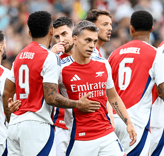
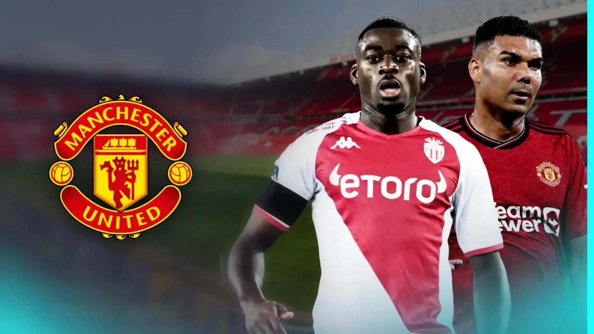
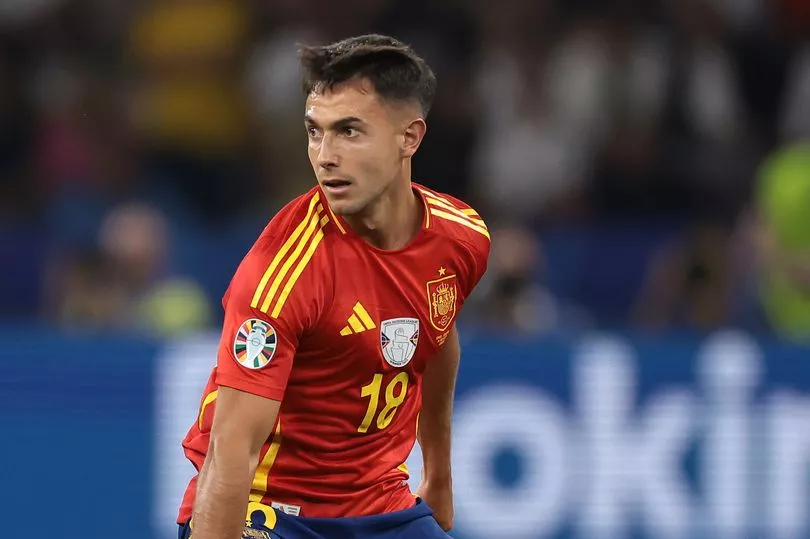

Arsenal 4-1 Bayer Leverkusen
Our first game at Emirates Stadium this summer was a superb occasion as we ran out 4-1 victors against Bayer Leverkusen, and you can see the best of the action now.
We got off to a dream start when Oleksandr Zinchenko and Leandro Trossard gave us a 2-0 lead within eight minutes, and Gabriel Jesus added a third with a fine individual effort before the break.
Kai Havertz added a fourth against his fellow countrymen, and while Adam Hlozek netted a consolation, the vast majority inside our home departed delighted with an emphatic win.with a full match replay to come on Thursday morning Click Here for More

Man Utd: £25m star ‘chosen’ to ‘replace’ Casemiro as Ratcliffe ‘turns to’ signing Bayern midfielder
Manchester United have reportedly ‘chosen’ their preferred replacement for Brazil international Casemiro, who is being targeted by Saudi Pro League clubs.
The Red Devils paid around £60m to sign Casemiro from Real Madrid in 2022.
He enjoyed a strong debut season but his performances significantly declined during the 2023/24 campaign. Click here for more

Martin Zubimendi to Liverpool transfer explained amid Arsenal questions around Mikel Arteta plan
Liverpool are pushing to sign Martin Zubimendi who has been linked to Arsenal as football.london explains why the Gunners are unlikely to rival their title rivals Click here for more..